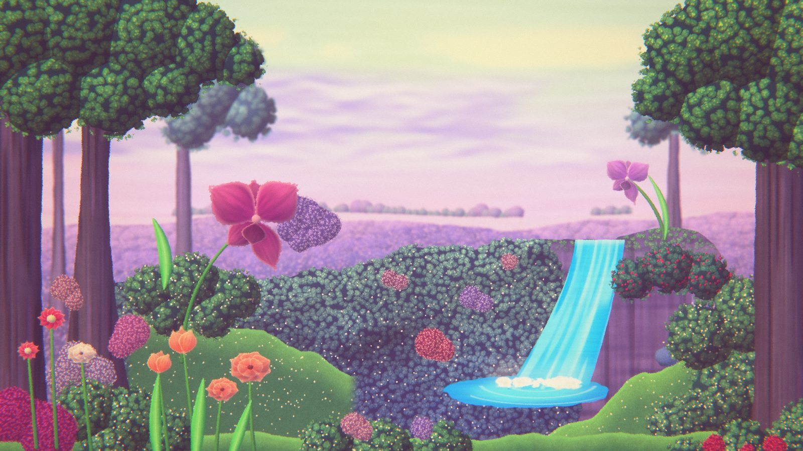

Study · procedural art · real-time WebGL
Garden study
Recreating the feel of a stop-motion backdrop on a podcast set, made by Tamara. Not affiliated with the show.

Study · procedural art · real-time WebGL
Recreating the feel of a stop-motion backdrop on a podcast set, made by Tamara. Not affiliated with the show.